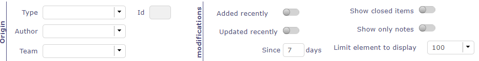
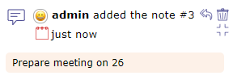

Activity Stream¶
The Activity stream allows you to display certain information about each of the elements of ProjeQtOr.
It is a kind of light history which allows you to quickly see the information of creation, deletion, changes of state of the element or the comments left by users according to their right of visibility.
Task list zone v9¶
The screen dedicated to the Activity Stream allows you to view all the feeds.
Filter system
 Filter system¶
This filter allows you to restrict the display by …
Type of element
Its id
Author
Team
Periods
With or not option: closed item, only notes
You can also select the amount of information to display and restrict the list to the screen.
Elements displayed
We can see on this summary several elements:
The element and its ID
The name given to this element
The creator of change
The date and the hour of the change
The name of the person responsible for the change
The type of creation, change or deletion that was carried out
The ID number into the history
Activity stream line¶
The impacted elements are all clickable. In the case of notes, the comment is displayeds.
Activity Stream on element screen
You can view the Activity Stream for each element on the screen of the latter.
Activity stream on the screen of a Project element¶
The items displayed depend on your visibility rights.
Activity stream zone
Activity stream information
 Activity stream details¶
In the activity stream area you can view the same information as on the dedicated screen.
The author of the information relayed with his profile icon
The type of information displayed: creation, deletion, change of state or comments
The date and time of the modification
Add a note
You can add a note simply by clicking in the text box at the bottom of the activity stream area.
By default, your note is visible to all users assigned to the project linked to the item.
Click on
to share it in public (project team: resources allocated to the project)
Click on
to share the note only with your team
Show/Hide notes
Likewise, it is possible to view the notes directly by using the following buttons
By default, you will see all visible notes for each item.
Click on Show only notes on activity feed to display only notes type information.


{kind=link}
{kind=link}
{kind=link}
{kind=link}
{kind=link}
{kind=link}
{kind=link}
{kind=link}
Global view¶
Global view screen¶
The “Global view” screen lists all the main objects created during a project. This allows you to quickly search through all types of items available.
You can also choose to display only certain items through the list to display

Global extraction for files¶
The extract for files allows the extraction of files in .zip file format.
The generated .zip file will be named with the formatting nameElement_UserN°ID.zip
You will be able to extract:
All files in a directory
All the files for a given element (project, activity, ticket, etc.)
All the files of a project and its elements
All the files of a project and its elements including the sub-projects and the elements of these sub-projects.
This includes attached files in addition to documents.
Extract files for project
Document’s files extraction for project¶
{kind=link}
Extract project document
All documents related to the selected project will be exported.
Extracted file names
Name preservation is only active on documents.
The initial name keeps the exact name of your document.
The formatted name retrieves the document reference and the extracted version.
Extracted version for each document
Two possibilities :
Last version
Reference version
Warning
The reference version is not necessarily the last version
Extract sub-project files
Without this option the sub-projects will not be included in the extraction.
Extract project elements document
Each element of the project containing documents will be exported.
Each item will have its own folder in the zip file.
Extract attachments
All the attached files on the project and its elements will be exported.
Extract files for directories

Document’s file Extraction for directories¶
The document directories can be extracted in their entirety.
Exemple Extract files for directory¶
When extracting directories including sub-directories, we find in the generated zip file only the sub-directories containing documents.
Extract file names
Name preservation is only active on documents.
The initial name keeps the exact name of your document.
The formatted name retrieves the document reference and the extracted version.
Extract document version
Two possibilities:
Last version
Reference version
Warning
The reference version is not necessarily the last version
Extract sub-directories
Without this option the sub-directories will not be included in the extraction.
Extract for item

Document’s file Extraction¶
The documents, attached files can be extracted of an item.
Extracted file names
Name preservation is only active on documents.
The initial name keeps the exact name of your document.
The formatted name retrieves the document reference and the extracted version.
Extracted version for each document
Two possibilities:
Last version
Reference version
Warning
The reference version is not necessarily the last version
Extract attachments
Include attached files in the extract